Welcome to Adult Sailing Courses
We are one of the leading RYA sailing schools in the UK, specialising in RYA Sailing courses, RYA Windsurfing courses, RYA Keelboat courses, RYA Instructor Training and RYA Powerboat courses. We have been helping people learn to sail for over 50 years by providing a full range of sailing courses and lessons. Our sailing courses are run on a friendly yet professional basis with experienced instructors who will make your sailing lessons both fun and memorable.
QMSC provides opportunities to continue sailing with a range of membership options, with or without your own sailing kit, with racing, clubs and activities to enjoy.
Please don't hesitate to get in contact by email to sailondon@queenmary.org.uk.
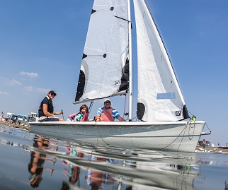
Sailing Taster
The perfect way to get a taste of sailing. Once you have received an introduction to the boat's controls, the group will take to the water to experience for the first time what it's like to go sailing, under the close supervision of the RYA instructor. Alternatively, head straight to our RYA Level 1 sailing course below.
Prior experience needed: None!
More Information Book Now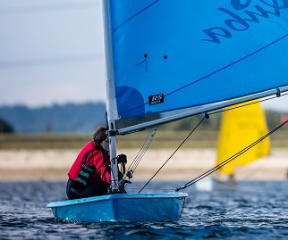
RYA Level 1: Start Sailing
2 day course at weekends from 0930 to 1700. The ideal introduction to the exciting sport of dinghy sailing. Learn a range of practical skills and knowledge.
Prior experience needed: None!
More Information Book Now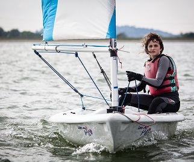
RYA Level 2: Basic Skills
2 day weekend course from 0930 to 1700. Develop skills and confidence to sail independently (minimum recognised qualification for hiring dinghies). Focus on the Five Essentials to improve sailing techniques.
Prior experience needed: RYA Level 1
More Information Book Now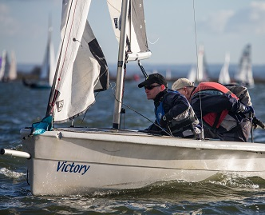
Group Sail Coaching
If you're looking for instructor support to take your Level 2 skills up a notch or brush off the cobwebs, then this is for you. Expect a mix of abilities and focuses during the session. This booking does include the hire of club boats. Boats available include RS Quba and Pico. If you wish to use a laser please book onto intermediate group coaching or laser training (in winter). Free for QM Select Members.
Prior experience needed: RYA Level 2
More Information Book Now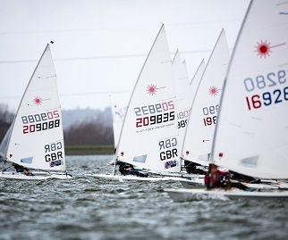
RYA Start Racing
2 full days from 0930 to 1700. An enjoyable introduction to club racing. Boats used are typically Lasers. Focus on boat handling, starts, mark rounding, racing rules, tactics and tuning.
Prior experience needed: RYA Level 2
More Information Book Now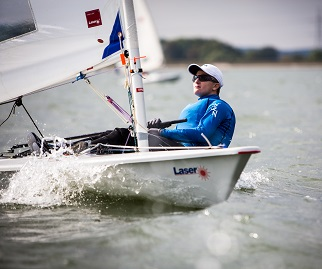
ILCA Intro
A coaching session for the intermediate sailor who wants to hone specific skills in an ILCA. Aimed at those who have sailed quite a lot after Level 2, hopefully regularly and may have joined in some club racing or social sailing activity. Come to the session with an idea of elements of sailing you would like to cover and the instructor will look to bring your ideas together for a common theme for everyone to work on. This will provide an intro to sailing ILCAs for either those new to the boat or those with only a little experience in them.
Prior experience needed: RYA Level 2 + Extra Sailing Experience
More Information Book Now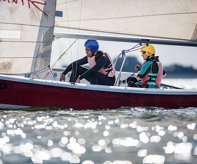
RYA Level 3: Better Sailing
By the end of this course, you will be safety conscious and capable of sailing without an instructor on board in moderate conditions. Successful completion of this course is the ideal preparation (and pre-requisite) for starting the RYA Advanced Modules. The course is completed in double handed dinghies.
Prior experience needed: RYA Level 2
More Information Book Now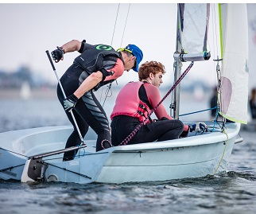
RYA Seamanship Skills
Through this course you will see a real improvement in your doublehander helming skills and boat positioning, by focusing on manoeuvres and seamanship decisions. Manoeuvres include sailing backwards, sailing with no rudder or centreboard, anchoring, reefing afloat, recovery of a man overboard and being towed.
Prior experience needed: RYA Level 3
More Information Book Now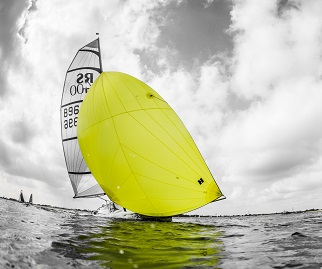
RYA Sailing with Spinnakers
You will learn how to handle a modern asymmetric spinnaker, covering power zones and boat speed, balance, and how to hoist, gybe and drop a spinnaker. The course follows the RYA Sailing With Spinnakers syllabus from the National Sailing Scheme.
Prior experience needed: RYA Level 3
More Information Book Now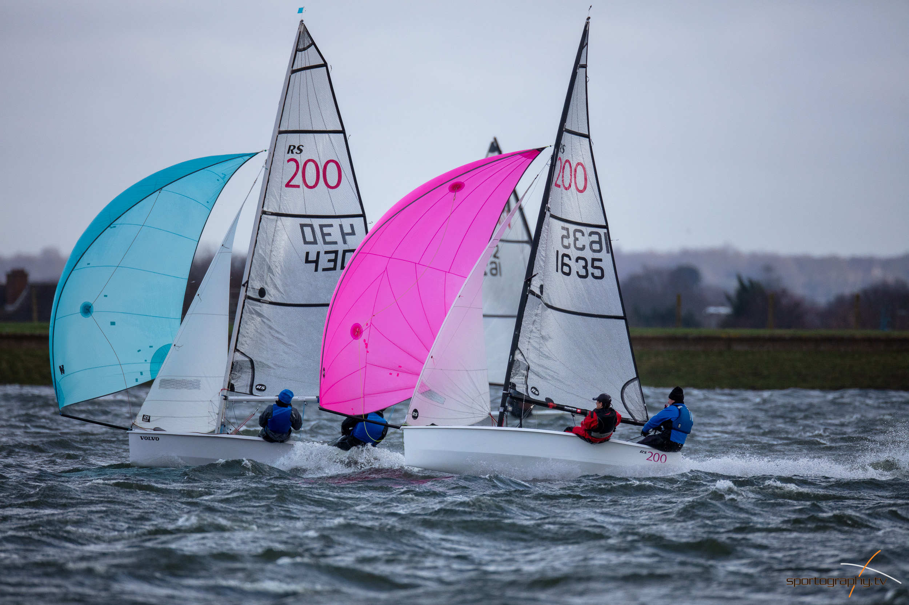
RS 200/400 Introduction
Get out in an RS 200/400 and learn some tricks for rigging and sailing them. You should already be confident helming and crewing a double hander with a spinnaker. If you are unsure about your suitability for this course do give the office a call. Free for Select Full AND Hire members.
Prior experience needed: RYA Seamanship Skills and RYA Sailing with Spinnakers (or equivalent experience).
Book Now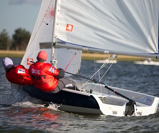
RYA Performance Sailing
This is the ultimate top-end dinghy course in high performance boats which combine large sail plans and asymmetric spinnakers with trapezes to deliver the ultimate thrill of high speed sailing once you have mastered how to control it all! By the end of the course you will be more confident in a high performance dinghy, both at high speeds on the water and with the tricks of launching and recovering unstable performance boats.
Prior experience needed: RYA Seamanship Skills & RYA Sailing with Spinnakers
More Information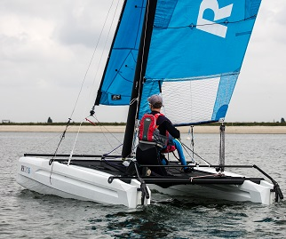
Catamaran Conversion Course
Experience the thrill of sailing fast catamarans, and how to handle their speed and power, to endorse your RYA Level 2 certificate with multihull recognition.
Prior experience needed: RYA Level 2
More Information Book Now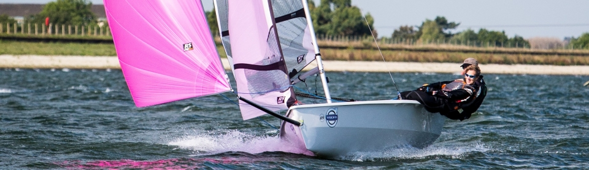
RS 200/400 Training
Build on your sailing skills in our RS200/400. General double handed skills will be worked upon alongside racing skills such as trigger pulls and mark roundings. This will also involve some advanced spinnaker training. It is perfect for anyone who has completed the RS200/400 introduction and is looking to develop further.
Prior experience needed: RS 200/400 Experience such as RS 200/400 Intro course
Book NowTeam Race Training Day
Have you been regularly sailing double handers? Have you tried a bit of fleet racing and really enjoyed it? Take this to the next level with a day all about team racing. During the morning you will learn all about various mark traps and how to work as a team. The afternoon will consist of a mini team racing series.
Prior experience needed: RYA Level 3 + Basic racing experience
Book Now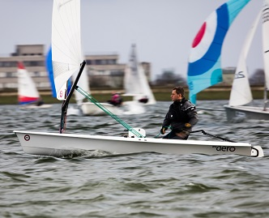
RS Aero Drop-in Session
Have you been regularly sailing ILCA and looking to try something new? This FREE drop in clinic for select members (Full and hire only) will give you a very basic understanding of the RS Aero and a quick sail on the water.
Prior experience needed: Confident sailing in an ILCA & a QM Select Member
Book Now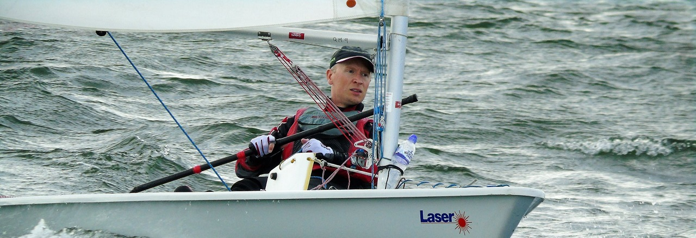
ILCA Race Training
Have you been sailing or racing a laser/ILCA for a while and looking to get some intermediate or advanced race training? This is the day for you. We will work on a variety of boat handling and racing skills through the morning, ending the day with a race series.
Prior experience needed: Regular ILCA sailor and confident in boat handling manoeuvres and basic racing knowledge.
Book Now